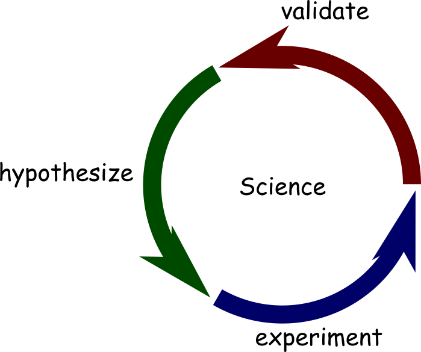
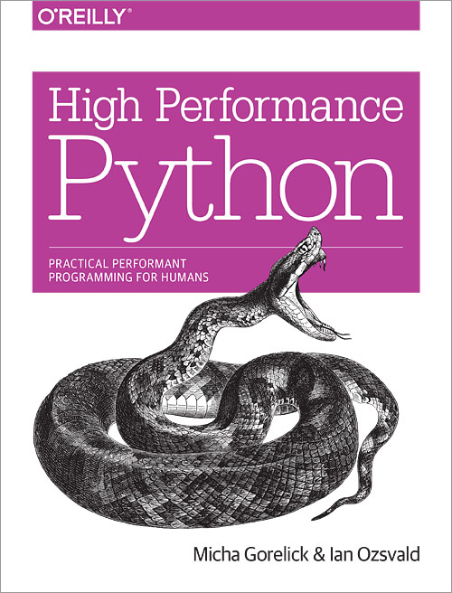
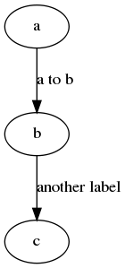
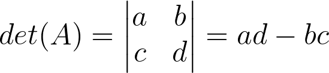
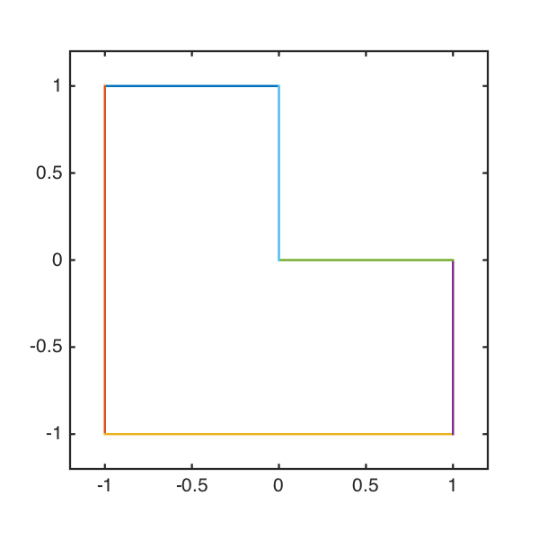
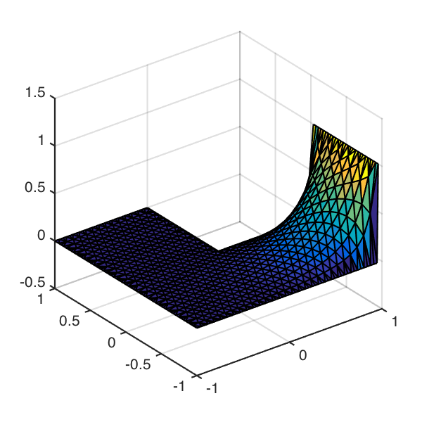

Not Invented Here
Porting Scientific Software to Python
Dr. Andrew Walker / @walkera101
What is "Scientific Software"?

Not Invented Here Syndrome
Interoperability Alternatives
- ctypes
- subprocess
- CFFI
- cython
- f2py
- pyfort
- Reflex / cppyy
- pyrex
- SIP
- boost::python
- scipy.weave
- rpy
- rpy2
- SWIG
- ipython
- pymatlab
- pymatbridge
- smop
- pymex
- ompc
Integration

Python as Glue
“Python's strength is that it's like software superglue. It lets you build abstractions like they were Lego” -- Travis Oliphant
Two reasons for to learn about Interoperability
Performance
Necessity
Part 2
an overview of the types of tools that are available
Subprocess
Interoperability via subprocesses
Graphviz Dot
digraph G {
a;
b;
c;
a -> b [ label="a to b" ];
b -> c [ label="another label"];
}Subprocess
from subprocess import *
def graphviz_dot(srcf, dstf, fmt='png'):
cmd = 'dot -T%(fmt)s %(srcf)s -o %(dstf)s'
cmd = cmd % locals()
subprocess.check_call(cmd.split())
When should you use subprocesses?
- If the tool you're interacting with has a CLI
- If performance isn't an issue
scipy.weave
Take a string of C/C++ code and make it callable from Python
Determinant of a 2 x 2 matrix

scipy.weave
def det22(A):
code = '''
double res;
res = A2(0,0) * A2(1,1) - A2(1,0) * A2(0, 1);
out[0] = res;
'''
out = [ 0.0 ]
scipy.weave.inline(code = code,
arg_names = ['A', 'out'],
return out[0]
print det22(np.array([[1, 2],[3,5]]))
Use scipy.weave when...
- you've got fragments of C/C++
- you're prototyping
Avoid scipy.weave when...
- debugging may be time consuming
- you you need want to share your code
ctypes
A standard library module for calling c-functions
Bessel functions
(Without scipy.special)
import ctypes
lib = ctypes.CDLL('/usr/lib/libm.dylib')
bessel_j0 = lib.j0
bessel_j0.argtypes = [ ctypes.c_double ]
bessel_j0.restype = ctypes.c_double
bessel_j1 = lib.j1
bessel_j1.argtypes = [ ctypes.c_double ]
bessel_j1.restype = ctypes.c_double
bessel_jn = lib.jn
bessel_jn.argtypes = [ ctypes.c_int, ctypes.c_double ]
bessel_jn.restype = ctypes.c_doubleUse ctypes if ...
- you want only want one or two functions
- you don't want to write c code
Avoid ctypes if ...
- you're doing anything complicated
Cython
A DSL for integrating C, C++ and Python
Distance From a Point to a Line Segment
Original Code
typedef struct tagXYZ
{
float X, Y, Z;
}
XYZ;
float Magnitude( XYZ *Point1, XYZ *Point2 )
{
XYZ Vector;
Vector.X = Point2->X - Point1->X;
Vector.Y = Point2->Y - Point1->Y;
Vector.Z = Point2->Z - Point1->Z;
return (float)sqrt( Vector.X * Vector.X + Vector.Y * Vector.Y + Vector.Z * Vector.Z );
}
int DistancePointLine( XYZ *Point, XYZ *LineStart, XYZ *LineEnd, float *Distance )
{
float LineMag;
float U;
XYZ Intersection;
LineMag = Magnitude( LineEnd, LineStart );
U = ( ( ( Point->X - LineStart->X ) * ( LineEnd->X - LineStart->X ) ) +
( ( Point->Y - LineStart->Y ) * ( LineEnd->Y - LineStart->Y ) ) +
( ( Point->Z - LineStart->Z ) * ( LineEnd->Z - LineStart->Z ) ) ) /
( LineMag * LineMag );
if( U < 0.0f || U > 1.0f )
return 0; // closest point does not fall within the line segment
Intersection.X = LineStart->X + U * ( LineEnd->X - LineStart->X );
Intersection.Y = LineStart->Y + U * ( LineEnd->Y - LineStart->Y );
Intersection.Z = LineStart->Z + U * ( LineEnd->Z - LineStart->Z );
*Distance = Magnitude( Point, &Intersection );
return 1;
}Via a Jupyter Notebook
%%cython
cdef dist_sq(np.ndarray p, np.ndarray q):
cdef double dx = q[0] - p[0]
cdef double dy = q[1] - p[1]
return dx*dx + dy*dy
def dist_pt_seg(np.ndarray p, np.ndarray u, np.ndarray v):
cdef double seglen_sq = dist_sq(u, v)
t = (p[0] - u[0]) * (v[0] - u[0])
t += (p[1] - u[1]) * (v[1] - u[1])
t /= seglen_sq
if t < 0 or t > 1.0:
return 0.0
return np.sqrt(dist_sq(p, u + t * (v-u)))
Use cython if ...
- you're exploring a solution space
- you're considering sharing your code
- you want integrated profiling tools
- neither python or C/C++ is enough
Avoid cython if ...
- you don't have time to learn a new language
- Cython != python
SWIG
A DSL for generating FFI bindings
pymatbridge
Calling MATLAB from Python
Solving the steady state heat equation with conformal mapping


%%matlab -i boundary_conditions
phi = lapsolve(p, boundary_conditions);
[tri, x, y] = triangulate(p);
figure;
trisurf(tri, x, y, phi(x+i*y));
Use pymatbridge if ...
- you want to interactively combine Python and MATLAB
- you only need to exchange data (not functions)
Before I get started...
Answer the following questions
- Is your code under version control?
- Do you write tests?
- Do your tests run regularly?
- Do you document your software?